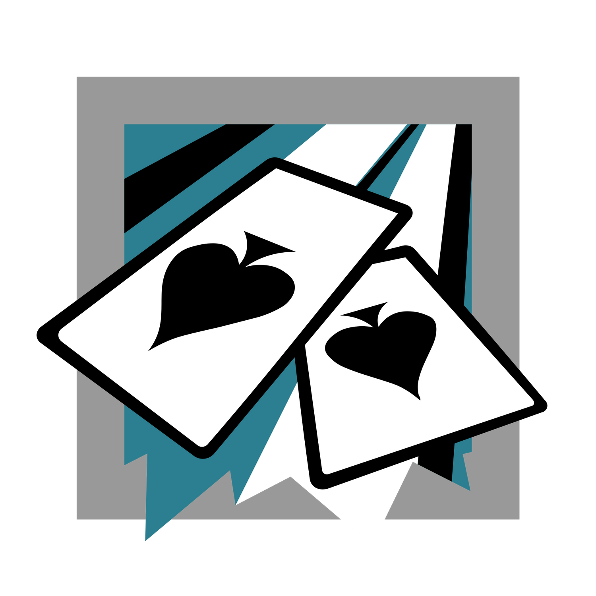
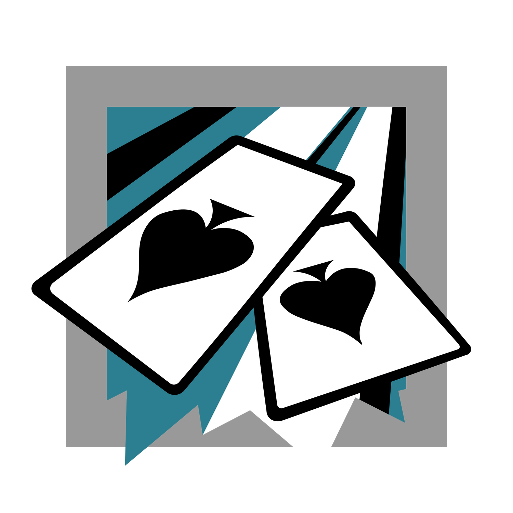

Historia
Rainbow Six Siege es un videojuego de disparos en primera persona táctico desarrollado y publicado por Ubisoft. Fue lanzado en 2015 y se ha convertido en uno de los juegos más populares del género.
La historia del juego se centra en la unidad especial Rainbow, una fuerza de élite que está formada por operadores de todo el mundo que se han reunido para luchar contra el terrorismo. El equipo Rainbow es liderado por Six, una misteriosa mujer que es muy respetada en la comunidad de contraterrorismo.
El juego presenta un modo multijugador en el que los jugadores pueden elegir a uno de los operadores de Rainbow para jugar en equipos de cinco contra cinco. Cada operador tiene habilidades y armas únicas que los hacen diferentes a los demás y requieren diferentes estrategias de juego.
Además del modo multijugador, Rainbow Six Siege también cuenta con un modo de campaña que se llama "Situation", donde los jugadores pueden entrenarse y mejorar sus habilidades con los operadores.
A medida que el juego ha ido evolucionando con actualizaciones y añadidos de contenido, se ha introducido una trama de fondo que se desarrolla a través de cinemáticas, eventos especiales y operaciones.
La trama principal del juego gira en torno a una organización terrorista llamada "White Masks" que amenaza a la seguridad global. Los operadores de Rainbow tienen la tarea de detener sus planes y eliminar a sus líderes. En los eventos y operaciones especiales, los jugadores pueden unirse a misiones específicas que expanden la historia y los personajes del juego.
En resumen, Rainbow Six Siege es un juego de disparos en primera persona táctico que se centra en la unidad especial Rainbow y su lucha contra el terrorismo. Con habilidades y armas únicas para cada operador y una trama de fondo en constante evolución, el juego se ha convertido en uno de los títulos más populares del género.
Modos de juego
- Bomba
- Asegurar el Area
- Rescate de Rehen
- Clasificatoria
El modo de juego "Bomba" en Rainbow Six es uno de los modos más populares y competitivos en el juego. Cada ronda se divide en dos fases, la fase de preparación y la fase de acción. En la fase de preparación, los defensores tienen un tiempo limitado para preparar sus defensas y barricadas en los sitios de bombas mientras que los atacantes utilizan drones para localizar las bombas y la posición de los defensores. En la fase de acción, los atacantes tienen un tiempo limitado para infiltrarse en la zona de la bomba, plantarla y protegerla mientras los defensores intentan evitar que la planten y desactivarla si es plantada. La clave para ganar en el modo de juego "Bomba" es la estrategia, la comunicación y la cooperación en equipo. Los atacantes necesitan trabajar juntos para superar las defensas de los defensores y plantar la bomba mientras que los defensores necesitan coordinar sus esfuerzos para proteger los sitios de bombas y evitar que los atacantes los planten. Con muchos elementos tácticos y de estrategia, el modo "Bomba" ofrece una experiencia emocionante y desafiante para los jugadores en Rainbow Six.
Operadores
En Rainbow Six Siege, los operadores son personajes con habilidades y armas únicas que los jugadores pueden elegir para jugar en el equipo de ataque o defensa. Cada operador tiene un papel específico en el equipo y su habilidad especial puede ser crucial para el éxito en una partida. La elección de operadores adecuados y la forma en que se utilizan puede marcar la diferencia entre la victoria y la derrota en Rainbow Six Siege. Algunos operadores pueden reforzar paredes, colocar trampas, lanzar granadas o incluso curar a los compañeros de equipo, lo que permite a los jugadores adaptar su estrategia según las necesidades del equipo. Además, los operadores también tienen diferentes armas y equipamiento, lo que significa que algunos son mejores en combates de corto alcance, mientras que otros son más efectivos a distancia. La elección de operadores adecuados también puede depender del mapa en el que se está jugando, ya que algunos operadores pueden tener ventaja en ciertos entornos.


 
